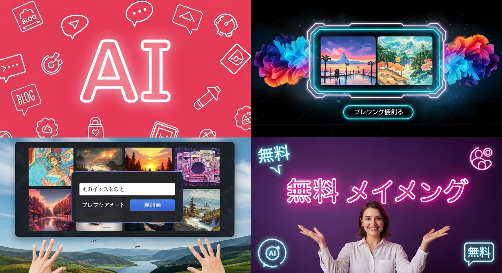

【無料】生成AI画像を日本語で！ブログ映えする作成ツールとコツ

インターネットが生活に深く浸透し、情報過多の現代において、視覚的な情報は私たちの心を掴み、メッセージを効果的に伝える上で欠かせない存在となっています。特に、ブログやウェブサイト、SNSといったデジタルコンテンツでは、魅力的な画像が読者の興味を引き、記事の理解を深め、さらにはブランドイメージを構築する上で決定的な役割を果たします。しかし、高品質な画像を準備するには、専門的なデザインスキルや高価な素材の購入、あるいはプロのデザイナーへの依頼など、時間的・金銭的なコストがかかるのが実情でした。
そんな中、近年急速に進化を遂げ、私たちのクリエイティブ活動に革命をもたらしているのが「生成AI画像」です。テキストで指示するだけで、AIが瞬時に独創的で美しい画像を創り出すこの技術は、これまで想像もできなかったような可能性を私たちに提示してくれます。特に、日本語での指示に対応し、無料で利用できるツールが増えてきたことで、専門知識がない方でも気軽に、そして手軽に、プロレベルのビジュアルコンテンツを制作できるようになりました。
本記事では、生成AI画像がなぜ今これほど注目されているのか、その基本的な仕組みから、無料で日本語対応しているおすすめのツール、そしてそれらを最大限に活用するための具体的なコツまで、幅広くご紹介していきます。ブログやウェブサイトの質を高めたい、SNSでの発信力を強化したい、あるいは単に新しいクリエイティブな表現に挑戦してみたいと考えている方にとって、この記事が新たな一歩を踏み出すための羅針盤となることを願っています。
さあ、最先端のAI技術を味方につけ、あなたのコンテンツを次のレベルへと引き上げる旅を始めましょう。
生成AI画像とは？日本語で無料作成できる理由
生成AI画像とは、人工知能（AI）がテキストの指示（プロンプト）や既存の画像データに基づいて、まったく新しい画像を生成する技術のことです。まるで魔法のように、私たちの言葉が具体的なビジュアルへと変換されるこの技術は、その登場以来、クリエイティブ業界だけでなく、一般のインターネットユーザーの間でも大きな話題となっています。
１．生成AI画像が注目される背景と魅力
生成AI画像がこれほどまでに注目を集める背景には、現代社会における視覚情報の重要性の高まりと、それに伴うコンテンツ制作の需要の増大があります。
まず、情報過多の時代における視覚情報の優位性が挙げられます。インターネット上には日々膨大な情報が溢れており、読者は瞬時にその価値を判断しようとします。このとき、目を引く高品質な画像は、テキストだけでは伝えきれないメッセージを直感的に伝え、読者の注意を引きつける強力なフックとなります。ブログのアイキャッチ画像、SNSの投稿、ウェブサイトのサービス紹介など、あらゆる場面でビジュアルの質がコンテンツの成否を左右すると言っても過言ではありません。
次に、コンテンツ制作における時間とコストの課題です。従来、魅力的な画像を準備するには、プロのカメラマンやデザイナーに依頼するか、ストックフォトサービスから購入するのが一般的でした。これらはいずれも、それなりの費用と時間が必要となります。特に個人ブロガーや中小企業にとって、これらのコストは大きな負担となっていました。
このような状況の中で、生成AI画像はまさに救世主として登場しました。その最大の魅力は、「誰でも」「手軽に」「高品質な」画像を生成できる点にあります。
- デザインスキル不要: Photoshopのような専門的な画像編集ソフトの操作スキルや、イラストを描く技術がなくても、テキストでイメージを伝えるだけでAIが画像を生成してくれます。これにより、これまでデザインに苦手意識を持っていた方でも、プロレベルのビジュアルコンテンツを制作できるようになりました。
- 短時間での生成: 複雑なデザイン作業や撮影に数時間、数日かかっていたものが、AIを使えば数秒から数分で複数のバリエーションを生成できます。これにより、コンテンツ制作のサイクルを大幅に短縮し、より多くのコンテンツを生み出すことが可能になります。
- 無限のバリエーションとオリジナリティ: AIは既存の画像を組み合わせるだけでなく、学習データから新たな概念を創造し、独創的な画像を生成します。これにより、ストックフォトサイトでは見つからないような、唯一無二のオリジナル画像を簡単に手に入れることができます。同じプロンプトでも、毎回少しずつ異なる画像が生成されるため、常に新しい発見と驚きがあります。
- コスト削減: 無料で利用できるツールが多数存在するため、画像制作にかかるコストを大幅に削減できます。これにより、予算が限られている個人や小規模なプロジェクトでも、質の高いビジュアルコンテンツを諦める必要がなくなりました。
これらの魅力が相まって、生成AI画像は、ブログ運営者、SNSインフルエンサー、マーケター、ウェブデザイナー、そして単にクリエイティブな表現を楽しみたいすべての人々にとって、非常に強力なツールとして注目されているのです。
２．画像生成AIの仕組みと進化を理解する
生成AI画像の仕組みを理解することは、より効果的にツールを使いこなし、意図した画像を生成するための第一歩となります。この技術の根幹をなすのは、主に「深層学習」と呼ばれるAIの一分野です。
初期の画像生成AIは、主に「GAN（Generative Adversarial Network：敵対的生成ネットワーク）」というモデルが主流でした。GANは、「生成器（Generator）」と「識別器（Discriminator）」という2つのネットワークが互いに競い合いながら学習を進めることで、リアルな画像を生成します。生成器はノイズから画像を生成し、識別器はその画像が本物か偽物かを判断します。この競争を繰り返すことで、生成器は識別器を騙せるほどリアルな画像を生成する能力を高めていきました。しかし、GANには学習の安定性や生成される画像の多様性に課題があることも知られていました。
近年、画像生成AIの分野に大きなブレイクスルーをもたらしたのが、「Diffusionモデル（拡散モデル）」と呼ばれる技術です。Diffusionモデルは、画像を徐々にノイズで汚染していく過程（順方向拡散）を学習し、その逆の過程（逆方向拡散）をシミュレーションすることで、ノイズから元の画像を復元するように新しい画像を生成します。このアプローチは、GANに比べて学習が安定しやすく、より高品質で多様な画像を生成できるという特徴があります。
特に、テキストから画像を生成するモデルは、「Text-to-Image Diffusionモデル」と呼ばれ、Stable DiffusionやDALL-E 2/3、Midjourneyなどが代表的です。これらのモデルは、膨大な量の画像とそれに対応するテキスト説明のペアを学習しています。例えば、「青い空の下、白い砂浜を歩く犬」といったテキスト情報と、それに合致する犬の画像データを大量にインプットすることで、AIはテキストとビジュアルの間の複雑な関連性を学習します。
私たちがプロンプトとして「青い空の下、白い砂浜を歩く犬」と入力すると、AIは学習した知識を基に、そのテキストに最も合致する画像をノイズの中から段階的に生成していきます。この際、AIは単に既存の画像を貼り合わせるのではなく、学習した概念やスタイルを組み合わせて、まったく新しい、かつテキストの指示に忠実な画像を創造するのです。
この技術の進化は目覚ましく、初期のAI画像はどこか不自然さが残るものでしたが、現在では写真と見分けがつかないほどのリアリティを持つ画像や、特定の画風を完璧に再現したイラストなど、驚くほど高品質な画像を生成できるようになっています。また、単に画像を生成するだけでなく、既存の画像を編集したり、特定の領域を補完したりする能力も向上しており、その応用範囲は広がる一方です。
３．なぜ無料で日本語対応のツールが存在するのか
生成AI画像の技術は非常に高度であり、その開発には膨大な計算資源と専門知識が必要です。それにもかかわらず、なぜ多くのツールが無料で、しかも日本語に対応して提供されているのでしょうか。これにはいくつかの理由が考えられます。
まず、オープンソースコミュニティの貢献が非常に大きい要因です。特に「Stable Diffusion」は、そのモデルがオープンソースとして公開されたことで、世界中の開発者が自由に利用、改変、再配布できるようになりました。これにより、多くの派生ツールやウェブサービスが生まれ、無料での提供が可能になりました。オープンソースの精神は、技術の民主化を促進し、誰もが最先端のAI技術にアクセスできる環境を作り出しています。
次に、競争とユーザー獲得の戦略です。画像生成AIの分野は急速に成長しており、多くの企業や開発者がこの市場に参入しています。無料版を提供することで、より多くのユーザーに自社のツールを試してもらい、その使いやすさや性能を実感してもらうことができます。無料版でユーザーベースを拡大し、その中から有料プランへの移行を促すビジネスモデルが一般的です。例えば、生成回数に制限を設けたり、より高品質な画像生成や追加機能を有料プランで提供したりする形です。
また、データ収集とモデル改善の目的もあります。ユーザーが無料ツールを利用して画像を生成する際、そのプロンプトや生成された画像データは、AIモデルのさらなる学習や改善に役立てられることがあります（ただし、これは各ツールの利用規約に明記されているべき事項です）。多くのユーザーが多様なプロンプトで画像を生成することで、AIはより多くのパターンを学習し、生成能力を向上させることができます。
そして、日本語対応の重要性です。生成AIの分野は英語圏が先行していましたが、日本市場の大きさや日本語ユーザーのニーズを鑑み、多くの開発者が多言語対応、特に日本語対応に力を入れています。日本語プロンプトの精度を高めることは、日本国内のユーザー層を取り込み、市場シェアを拡大するために不可欠な戦略となっています。日本語を理解し、自然な表現で画像を生成できるAIは、日本のクリエイターにとって非常に価値の高いツールとなるため、開発側も積極的に対応を進めているのです。
これらの要因が複合的に作用し、私たちは現在、無料で日本語に対応した高品質な生成AI画像ツールを利用できる恵まれた環境にいます。この進化は、クリエイティブな表現の敷居を大きく下げ、より多くの人々が自身のアイデアをビジュアルとして具現化できる未来を切り開いています。
【無料・日本語対応】生成AI画像ツールおすすめ5選
さて、生成AI画像の基本的な知識を深めたところで、いよいよ具体的なツールのご紹介に移りましょう。数ある生成AI画像ツールの中から、特に無料で利用でき、日本語プロンプトにも対応している、初心者の方にもおすすめの5つのツールを厳選しました。それぞれのツールの特徴や無料利用範囲、そしてどんな方におすすめかをご紹介しますので、ぜひご自身の用途に合ったツールを見つけて、AI画像生成の世界に足を踏み入れてみてください。
１．ツール1：Bing Image Creator（DALL-E 3搭載）
特徴と日本語対応、無料利用範囲:
Microsoftが提供する「Bing Image Creator」は、OpenAIの最新かつ高性能な画像生成AIモデル「DALL-E 3」を搭載していることが最大の魅力です。DALL-E 3は、そのプロンプト理解能力の高さと、テキストの指示に非常に忠実な画像を生成する能力で知られています。複雑な指示や具体的な描写も的確に解釈し、高品質な画像を生成してくれるため、特に初心者の方でもイメージ通りの画像を作りやすいのが特徴です。
日本語プロンプトにも非常に高い精度で対応しており、自然な日本語で指示を入力するだけで、意図した画像を生成できます。特別な設定や英語への翻訳は不要なので、英語が苦手な方でも安心して利用できます。
無料利用範囲としては、Microsoftアカウントがあれば誰でも利用でき、毎日一定数の「ブースト」が付与されます。このブーストを消費することで、高速な画像生成が可能です。ブーストがなくなっても画像生成は可能ですが、生成速度が遅くなる場合があります。日常的な利用であれば、無料のブーストで十分事足りることがほとんどです。生成された画像は商用利用も可能とされていますが、Microsoftの利用規約やDALL-E 3のライセンスガイドラインを必ず確認してください。
こんな方におすすめ:
- AI画像生成が初めての初心者の方。
- 複雑なプロンプトでも、より正確に意図した画像を生成したい方。
- 日本語で直感的に操作したい方。
- 無料で手軽に高品質な画像を生成したい方。
- ブログのアイキャッチやSNSの投稿など、日常的に画像を必要とする方。
２．ツール2：Leonardo AI
特徴と日本語対応、無料利用範囲:
Leonardo AIは、Stable Diffusionをベースにしつつ、独自の高性能モデルや便利な機能を多数搭載した画像生成プラットフォームです。その最大の特徴は、非常に多様なスタイルやモデルを選択できる点にあります。写真のようなリアルな画像から、アニメ風、ファンタジーアート、コンセプトアートなど、幅広いジャンルの画像を生成することが可能です。また、生成された画像をさらに編集したり、アップスケール（高解像度化）したりする機能も充実しており、クリエイティブな表現の幅を大きく広げてくれます。
日本語プロンプトにも対応していますが、英語プロンプトの方がより意図通りの画像を生成しやすい傾向があります。しかし、簡単な日本語であれば十分に機能し、翻訳機能などを活用すれば問題なく利用できるでしょう。
無料利用範囲としては、毎日一定数の「トークン」が付与され、このトークンを消費して画像を生成します。生成する画像の枚数や、選択するモデル、利用する機能によって消費トークン数は異なりますが、日常的な利用や試行錯誤には十分な量が提供されます。商用利用については、無料プランでも生成した画像は商用利用可能とされていますが、念のため最新の利用規約を確認することが重要です。
こんな方におすすめ:
- 写真のようなリアルな画像や、特定の芸術的なスタイルに特化した画像を生成したい方。
- 生成AI画像の機能を深く探求し、多様な表現に挑戦したい方。
- 生成した画像をさらに編集したり、高解像度化したりしたい方。
- Stable Diffusionの強力な機能を、より使いやすいインターフェースで利用したい方。
３．ツール3：SeaArt
特徴と日本語対応、無料利用範囲:
SeaArtは、AI画像生成のコミュニティプラットフォームであり、多様なAIモデルと豊富な機能が特徴です。特に、Stable Diffusionの様々なカスタムモデル（LoRAなど）を簡単に利用できる点が大きな強みです。これにより、特定のキャラクターや画風に特化した画像を生成しやすく、ユーザーの創造性を刺激します。他のユーザーが公開しているプロンプトや設定を参考にできるギャラリー機能も充実しており、初心者でも上級者のテクニックを学びやすい環境が整っています。
日本語プロンプトにも対応しており、比較的自然な日本語で指示を出すことができます。ただし、より複雑なニュアンスを伝えたい場合や、特定のモデルを利用する際には、英語プロンプトの方が効果的な場合もあります。しかし、基本的な利用においては日本語で十分対応可能です。
無料利用範囲としては、毎日「コイン」が付与され、このコインを消費して画像を生成します。ログインボーナスやタスク達成でコインを増やすこともできるため、継続的に無料で利用しやすい設計になっています。生成枚数も比較的多く、様々な画像を試すことが可能です。商用利用については、生成した画像の著作権はユーザーに帰属するとされていますが、利用規約や使用するモデルのライセンスを確認することが不可欠です。
こんな方におすすめ:
- Stable Diffusionの多様なモデルを試してみたい方。
- 特定の画風やキャラクターに特化した画像を生成したい方。
- 他のユーザーの作品やプロンプトを参考にしながら学びたい方。
- 無料で多くの画像を生成したい方。
- コミュニティを通じてAI画像生成の知識を深めたい方。
４．ツール4：CanvaのAI画像生成機能
特徴と日本語対応、無料利用範囲:
Canvaは、元々グラフィックデザインツールとして非常に人気がありますが、近年、その機能の一つとしてAI画像生成機能も搭載されました。CanvaのAI画像生成の最大の利点は、既存のデザインワークフローにシームレスに組み込める点です。生成した画像をそのままCanvaのデザインプロジェクトに挿入し、テキストや他のグラフィック要素と組み合わせて、ポスター、バナー、SNS投稿、プレゼンテーション資料などを効率的に作成できます。
日本語プロンプトにも完全対応しており、Canvaのインターフェース自体も日本語で利用できるため、非常に直感的に操作できます。デザインツールとしてのCanvaに慣れている方であれば、迷うことなくAI画像生成機能も使いこなせるでしょう。
無料利用範囲としては、Canvaの無料プランユーザーでもAI画像生成機能を利用できますが、生成回数に制限がある場合があります。有料プラン（Canva Proなど）に加入することで、より多くの画像を生成したり、追加機能を利用したりできます。生成された画像の商用利用については、Canvaのコンテンツライセンス契約に従う必要がありますが、基本的にCanvaで作成したデザインの一部として商用利用が可能です。
こんな方におすすめ:
- Canvaを普段から利用している方で、デザインワークフローの中でAI画像を生成したい方。
- AI画像を生成し、すぐに他のデザイン要素と組み合わせて利用したい方。
- ブログのアイキャッチやSNSの投稿、プレゼンテーション資料など、既存のデザインにAI画像を加えたい方。
- 日本語での操作に慣れており、直感的なインターフェースを求める方。
５．ツール5：Stable Diffusion Web UI (AUTOMATIC1111版)
特徴と日本語対応、無料利用範囲:
Stable Diffusion Web UI (AUTOMATIC1111版) は、Stable DiffusionモデルをローカルPC上で動作させるための最も有名で高機能なインターフェースの一つです。このツールの最大の強みは、その圧倒的なカスタマイズ性と自由度にあります。様々なモデル（チェックポイント）、LoRA（特定の特徴を追加するモデル）、VAE（色合いなどを調整するモデル）、拡張機能などを組み合わせて、非常に細かく画像を制御できます。イラストレーションから写真、特定のアーティストのスタイルまで、あらゆる種類の画像を生成することが可能です。
日本語プロンプトにも対応していますが、基本的には英語プロンプトの方がより多くのモデルで最適な結果を得やすい傾向があります。しかし、日本語プロンプトでも十分に利用可能であり、拡張機能の中には日本語対応を強化するものもあります。
無料利用範囲: このツールは、ローカルPCにインストールして利用するため、完全に無料です。インターネット接続は必要ですが、画像生成自体に費用はかかりません。ただし、高性能なグラフィックボード（GPU）を搭載したPCが必要となり、PCのスペックによっては快適に動作しない場合があります。また、インストールや設定にはある程度の技術的な知識が求められるため、初心者の方には少しハードルが高いかもしれません。しかし、一度設定してしまえば、無制限に画像を生成できるという点で、究極の無料ツールと言えるでしょう。
こんな方におすすめ:
- 高性能なグラフィックボードを搭載したPCを持っている方。
- 技術的な知識があり、AI画像生成の奥深さを追求したい方。
- 究極のカスタマイズ性と自由度を求める方。
- 完全に無料で、無制限に画像を生成したい方。
- 特定のモデルや画風を徹底的に研究し、クリエイティブな表現の限界を押し広げたい方。
これらのツールは、それぞれ異なる特徴と強みを持っています。まずは、ご自身の目的やPC環境、AI画像生成に対する習熟度に合わせて、最も使いやすそうなツールから試してみることをお勧めします。どのツールも、あなたのクリエイティブな可能性を大きく広げてくれることでしょう。
生成AI画像を無料で使うメリット
生成AI画像を無料で利用することは、個人ブロガーから中小企業のマーケター、趣味でコンテンツを制作する方々まで、幅広いユーザーにとって計り知れないメリットをもたらします。ここでは、特に注目すべき4つのメリットを詳しく見ていきましょう。
１．デザインスキル不要で高品質なビジュアルを実現
これは生成AI画像の最大の魅力の一つと言えるでしょう。従来、魅力的なビジュアルコンテンツを制作するには、専門的なデザインスキルや画像編集ソフトの操作経験が不可欠でした。例えば、PhotoshopやIllustratorのようなツールを使いこなすには、それなりの学習期間と練習が必要です。また、イラストを描くには絵心が、写真を撮るには撮影技術と機材が求められます。
しかし、生成AI画像は、これらの専門スキルを一切必要としません。あなたがすべきことは、頭の中に描いているイメージを言葉でAIに伝えるだけです。例えば、「夕焼けの海を背景に、一人で佇む女性のシルエット、感動的な雰囲気で」といった具体的なプロンプトを入力すれば、AIがその言葉を解釈し、瞬時に複数の高品質な画像を生成してくれます。
生成される画像は、プロのデザイナーが手掛けたかのようなクオリティを持つことが多く、写真のようなリアルな表現から、水彩画、油絵、アニメ調、ピクセルアートといった多様な画風まで、幅広いスタイルに対応できます。これにより、デザイン経験がない方でも、ブログのアイキャッチ、SNSの投稿、ウェブサイトの挿絵など、あらゆるコンテンツにプロレベルのビジュアルを取り入れることが可能になります。
この「デザインスキル不要」という点は、特に個人で情報発信をしている方や、デザインに予算をかけられない小規模ビジネスにとって、コンテンツの質を飛躍的に向上させる強力な武器となります。あなたのアイデアを、視覚的に魅力的な形で具現化する敷居が、劇的に低くなったと言えるでしょう。
２．オリジナリティの高い画像を短時間で生成可能
生成AI画像は、単に高品質なだけでなく、高いオリジナリティと圧倒的なスピードを両立させます。
ストックフォトサービスや無料画像サイトを利用する場合、確かに手軽に画像を入手できますが、多くの人が同じ画像を使用する可能性があるため、コンテンツのオリジナリティが損なわれがちです。また、完全にイメージ通りの画像が見つからないことも少なくありません。一方、プロのデザイナーに依頼すればオリジナリティは確保できますが、時間も費用もかかります。
生成AI画像の場合、プロンプトの組み合わせは無限大です。同じプロンプトを入力しても、AIが毎回異なる画像を生成するため、他の誰とも被らない、唯一無二のオリジナル画像を手に入れることができます。あなたのブログやウェブサイトのコンセプト、記事の内容に合わせて、細部にまでこだわった画像を生成できるため、コンテンツの独自性と魅力を最大限に引き出すことが可能です。
さらに、このオリジナリティの高い画像を短時間で生成できるという点も、大きなメリットです。従来の画像制作プロセスでは、アイデア出しから制作、修正まで数時間から数日かかることも珍しくありませんでした。しかし、AI画像生成ツールを使えば、数秒から数分で複数の画像を生成し、その中から最適なものを選ぶことができます。気に入った画像がなければ、プロンプトを少し修正して再生成するのも簡単です。
このスピード感は、特に情報がリアルタイムで更新されるブログやSNSにおいて、非常に有利に働きます。タイムリーな話題に合わせて、その都度オリジナリティの高いビジュアルコンテンツを素早く提供できるため、読者の関心を維持し、エンゲージメントを高めることに貢献します。クリエイティブな試行錯誤のサイクルが短縮されることで、より多くのアイデアを形にし、表現の可能性を広げることができるでしょう。
３．コストをかけずにブログやWebサイトの質を向上
コンテンツ制作において、コストは常に重要な要素です。特に個人や小規模なプロジェクトでは、限られた予算の中でいかに効果的なコンテンツを生み出すかが課題となります。生成AI画像を無料で利用できることは、このコスト面において非常に大きなメリットをもたらします。
まず、画像購入費の削減です。高品質なストックフォトやイラストを購入する場合、一枚あたり数百円から数千円かかることが一般的です。ブログ記事を何十本、何百本と書く場合、これらの費用は累積するとかなりの額になります。生成AI画像を無料で利用すれば、これらの費用が一切かかりません。
次に、デザイナー依頼費の不要です。プロのデザイナーにオリジナルのイラストや画像を依頼する場合、デザイン料は数万円から数十万円にもなることがあります。生成AI画像を使えば、この高額な費用をかけずに、デザインスキルがない自分自身で、プロが手掛けたかのようなクオリティの画像を制作できます。
これらのコストを削減できることで、浮いた予算を他の重要な部分、例えば記事の執筆、SEO対策、広告費などに振り向けることができます。結果として、全体的なコンテンツ制作の効率と費用対効果を大幅に向上させることが可能です。
そして、最も重要なのは、コストをかけずにブログやウェブサイトの視覚的な質を向上させられる点です。読者は、見た目が洗練されているコンテンツに対して、より信頼感やプロフェッショナルな印象を抱きやすいものです。高品質な画像を適切に配置することで、記事の読みやすさが向上し、読者の滞在時間が延び、結果的にSEO評価の向上にも繋がる可能性があります。
無料の生成AI画像は、限られたリソースの中で最大限の成果を出したいと考えるすべての人にとって、まさに「費用対効果の高い」強力なツールと言えるでしょう。
４．多様なスタイルやコンセプトの画像を試せる手軽さ
クリエイティブな活動において、様々なアイデアを試すことは非常に重要です。しかし、従来の画像制作では、スタイルやコンセプトを変更するたびに、時間や労力、場合によってはコストがかかっていました。生成AI画像を無料で利用できることは、この試行錯誤のプロセスを劇的に手軽にし、表現の可能性を無限に広げてくれます。
生成AIツールは、フォトリアルな画像から、アニメ調、水彩画、油絵、ピクセルアート、サイバーパンク、ファンタジー、ミニマリストなど、驚くほど多様なスタイルや画風に対応しています。同じプロンプトでも、スタイルに関するキーワードを少し変えるだけで、まったく異なる雰囲気の画像を生成できます。
例えば、「猫がソファでくつろいでいる画像」を生成したいとします。
- 「リアルな写真風」と指定すれば、まるでプロが撮影したかのような写真が生成されます。
- 「スタジオジブリ風のアニメイラスト」と指定すれば、温かみのある手描き風のイラストが生まれます。
- 「サイバーパンク風のデジタルアート」と指定すれば、未来的なネオンカラーの猫が描かれるかもしれません。
- 「水彩画風」と指定すれば、やわらかいタッチの絵画が生成されます。
このように、数秒で異なるスタイルの画像を生成し、比較検討できる手軽さは、従来の制作プロセスでは考えられなかったことです。これにより、ブログのテーマや記事の内容、ターゲット層に合わせて、最適なビジュアルスタイルを迅速に見つけることができます。
また、特定のコンセプトや抽象的なアイデアを視覚化する際にも、その手軽さが役立ちます。例えば、「未来の都市の交通システム」や「心の安らぎを表現する抽象画」といった難しいテーマでも、様々なプロンプトやスタイルを試しながら、最適なビジュアルイメージを探求できます。
この「多様なスタイルやコンセプトを手軽に試せる」というメリットは、クリエイティブな発想を刺激し、あなたのコンテンツにこれまでにない深みと魅力を加えることを可能にします。時間やコストを気にせず、思う存分AI画像生成の可能性を探求できるのは、まさに現代のクリエイターにとって最高の環境と言えるでしょう。
生成AI画像を無料利用する際の注意点・デメリット
生成AI画像を無料で利用することには多くのメリットがありますが、同時にいくつかの注意点やデメリットも存在します。これらを事前に理解しておくことで、トラブルを避け、より賢く、安全にAI画像生成ツールを活用することができます。
１．無料版における機能制限や利用回数制限
ほとんどの無料生成AI画像ツールには、何らかの形で機能制限や利用回数制限が設けられています。これは、サービス提供側がサーバーコストを賄い、有料プランへの誘導を促すためのビジネスモデルの一部です。
具体的な制限の例としては、以下のようなものがあります。
- 生成回数の制限: 1日に生成できる画像の枚数や、月に利用できる「クレジット」「トークン」の数が決まっている場合があります。例えば、1日10枚まで、または100クレジットまでといった形です。これを超過すると、有料プランへのアップグレードを促されたり、翌日まで待つ必要があったりします。
- 生成速度の制限: 無料版では、画像生成の優先度が低く設定され、有料ユーザーに比べて生成に時間がかかることがあります。特にアクセスが集中する時間帯は、待ち時間が長くなる傾向があります。
- 画質の制限: 生成される画像の解像度が低かったり、アップスケール（高解像度化）機能が制限されたりする場合があります。ブログやSNSで使う分には問題なくても、印刷物など高精細な画像が必要な場合には不向きかもしれません。
- 利用できるモデルや機能の制限: より高性能な画像生成モデルや、特定のスタイルを生成するLoRA（学習済みモデルの一部）などが有料プラン限定となっている場合があります。また、インペイント（画像の一部修正）やアウトペイント（画像の外側を生成して拡張）といった高度な編集機能も、無料版では利用できないことが多いです。
- 広告の表示: 無料版のツールやウェブサービスでは、画面上に広告が表示されることがあります。これはサービス運営のための収益源ですが、ユーザー体験を損なう可能性もあります。
- 商用利用の制限: 後述しますが、無料版で生成した画像の商用利用が制限されているツールもあります。
これらの制限は、日常的な利用や試用期間中には大きな問題とならないことが多いですが、本格的にコンテンツ制作に組み込む場合や、大量の画像が必要な場合には、無料版の限界を感じることがあるでしょう。利用を始める前に、各ツールの無料利用範囲と制限事項をしっかりと確認しておくことが重要です。
２．著作権・肖像権に関する懸念と確認事項
生成AI画像を利用する上で、最も慎重になるべき点が著作権と肖像権に関する問題です。この分野はまだ法整備が追いついていない部分も多く、常に最新の情報を確認し、リスクを理解しておく必要があります。
著作権に関する懸念:
生成AIは、インターネット上の膨大な画像データを学習して画像を生成します。この学習データの中には、著作権で保護された画像が含まれている可能性があります。
- 学習データの著作権: AIが学習する過程で著作権侵害が発生しているのではないか、という議論があります。現時点では、学習行為自体が著作権侵害にあたるという明確な判例は少ないですが、将来的に法解釈が変わる可能性もあります。
- 生成画像の類似性: 生成された画像が、既存の特定の著作物（イラスト、写真、キャラクターなど）に酷似している場合、著作権侵害とみなされるリスクがあります。特に、有名なキャラクターやブランドロゴなどをプロンプトに含めて生成すると、このリスクは高まります。
- 著作権の帰属: 生成AIによって作られた画像の著作権が誰に帰属するのか、という問題も複雑です。多くのツールでは、生成したユーザーに著作権が帰属するとされていますが、AIが生成した「創作物」が著作権法上の「著作物」とみなされるかについては、国や法域によって見解が分かれています。
肖像権に関する懸念:
肖像権は、個人の顔や姿が無断で公開されたり利用されたりしない権利です。
- 実在の人物の模倣: プロンプトで「有名人の〇〇のような人物」と指示したり、特定の人物の写真を学習させて画像を生成したりした場合、その人物の肖像権を侵害する可能性があります。特に、その人物が不快に感じるような文脈で利用されたり、無断で商業利用されたりすると問題になります。
確認事項と対策:
これらのリスクを避けるために、以下の点を必ず確認し、実践しましょう。
- 各ツールの利用規約を熟読する: 最も重要なのは、利用する生成AIツールの公式な利用規約（Terms of Service）やFAQ（よくある質問）をしっかりと読み込むことです。特に、著作権の帰属、商用利用の可否、生成画像の責任に関する項目は注意深く確認してください。
- 既存の著作物との類似性を確認する: 生成された画像が、特定のキャラクターやデザイン、人物に酷似していないか、自分で慎重に確認しましょう。少しでも疑わしい場合は、その画像の利用を避けるか、プロンプトを修正して再生成することをお勧めします。
- 商用利用の可否を再確認する: 無料版では商用利用が禁止されているケースや、特定の条件下でのみ許可されているケースがあります。商用目的で利用する場合は、必ずそのツールの商用利用に関するポリシーを確認してください。
- 免責事項の理解: 多くのツールは、生成された画像に関する著作権侵害や肖像権侵害のリスクについて、ユーザーが責任を負う旨を免責事項として記載しています。つまり、万が一トラブルが発生した場合、最終的な責任は画像を生成・利用したユーザー自身にあるということです。
- 不自然な生成物の利用を避ける: AIが生成した画像の中には、手足の指の数が不自然だったり、顔のパーツが歪んでいたりするものがあります。これらは見た目の問題だけでなく、倫理的な観点からも利用を避けるべきです。
著作権や肖像権の問題は複雑であり、常に議論が続いています。しかし、ユーザー側がこれらのリスクを理解し、慎重に対応することで、トラブルを未然に防ぎ、安心してAI画像生成技術の恩恵を受けることができます。
３．意図しない画像生成やプロンプトの難しさ
生成AI画像は私たちの言葉をビジュアルに変換してくれる強力なツールですが、常に完璧に意図通りの画像を生成してくれるわけではありません。時には、予期せぬ結果や、プロンプトの解釈の難しさに直面することがあります。
意図しない画像生成:
AIは、私たちが入力したプロンプトを基に画像を生成しますが、その解釈は人間とは異なる場合があります。
- 言葉の解釈違い: 例えば、「笑顔の子供」と入力しても、AIが認識する「笑顔」が、私たちが想像する自然な笑顔とは異なる場合があります。あるいは、「青い空」と指示しても、単なる青い背景になってしまうこともあります。
- 不自然な描写: 特に人物の描写において、手足の指の数が不自然だったり、顔のパーツが歪んでいたり、複数の頭が出現したりと、奇妙な画像が生成されることがあります。これはAIが学習したデータに偏りがあったり、複雑な構造を正確に再現する能力がまだ十分でなかったりするためです。
- 文脈の誤解: 複数の要素を組み合わせたプロンプトの場合、AIがそれぞれの要素の関係性や文脈を正確に理解できず、意図しない組み合わせや配置で画像を生成してしまうことがあります。
プロンプトの難しさ:
生成AI画像の質は、入力するプロンプトの質に大きく左右されます。しかし、効果的なプロンプトを作成するには、ある程度の経験とコツが必要です。
- 具体的な指示の必要性: 「美しい風景」といった抽象的なプロンプトでは、AIはどのような「美しさ」を求めているのか判断できません。結果として、汎用的で特徴のない画像が生成されがちです。より具体的な要素（例: 「夕焼けに染まる富士山と桜並木、手前には湖、日本の伝統的な美意識で」）を盛り込む必要があります。
- キーワードの選定: AIが学習しているキーワードを理解し、効果的に組み合わせる必要があります。例えば、「写実的」よりも「photorealistic」の方がよりリアルな画像を生成しやすい場合があります。また、特定の画風を表現する際も、その画風を的確に表すキーワードを選ぶ必要があります。
- ネガティブプロンプトの活用: 意図しない要素を排除するためには、「ネガティブプロンプト」（生成してほしくない要素を指定するプロンプト）を効果的に使う必要があります。しかし、何をネガティブプロンプトとして指定すべきかを見極めるのは、慣れないうちは難しいかもしれません。
- 試行錯誤の必要性: 理想の画像を生成するには、何度もプロンプトを修正し、画像を生成し直す試行錯誤のプロセスが不可欠です。このプロセスは、特に無料版で生成回数に制限がある場合、もどかしさを感じるかもしれません。
これらの課題は、AI画像生成ツールを使いこなす上で避けて通れない部分です。しかし、後述する「生成AI画像を上手に生成するコツ」を学ぶことで、これらの難しさを克服し、より意図通りの画像を生成できるようになります。最初はうまくいかなくても、諦めずに様々なプロンプトを試し、AIの「思考」を理解しようと努めることが重要です。
４．商用利用の可否と各ツールの利用規約
生成AI画像を無料で利用する際に最も注意すべき点の一つが、商用利用の可否です。個人の趣味や非営利目的での利用であれば問題ないケースが多いですが、ブログで収益を得ている場合や、ウェブサイトで商品・サービスを宣伝する場合など、金銭が発生する可能性のある利用は「商用利用」とみなされることがほとんどです。
商用利用に関する注意点:
- 各ツールの利用規約を必ず確認する: これが最も重要です。生成AI画像ツールの提供元は、それぞれ異なる利用規約を設けています。
- 無料版では商用利用不可: 一部のツールでは、無料版で生成した画像の商用利用を明確に禁止しています。商用利用を希望する場合は、有料プランへのアップグレードが必須となる場合があります。
- 特定の条件付きで商用利用可: 商用利用は可能だが、クレジット表記が必要であったり、一定の収益額を超えたら有料プランへの移行が必要であったりするケースもあります。
- 商用利用可能だが自己責任: 生成画像の著作権に関する免責事項が強調されており、著作権侵害などのトラブルが発生した場合、利用者が全責任を負うというスタンスのツールもあります。
- ベースモデルのライセンス: Stable Diffusionのようなオープンソースのモデルをベースにしているツールの場合、そのベースモデルのライセンス（例: Creative ML OpenRAIL-M License）も確認する必要があります。多くの場合、商用利用は許可されていますが、悪用を防ぐための制限（特定のコンテンツの生成禁止など）が設けられています。
- 生成画像の著作権帰属の問題: 前述の通り、AIが生成した画像の著作権が誰に帰属するのかは、法的にまだ明確ではない部分があります。多くのツールは「生成したユーザーに著作権が帰属する」としていますが、これはあくまでツールの利用規約上の話であり、法的な解釈とは異なる可能性があります。この不確実性があるため、商用利用の際は特に慎重な判断が求められます。
- 肖像権・商標権侵害のリスク: 商用利用の場合、生成された画像に実在の人物に酷似した顔や、特定のブランドロゴ、キャラクターなどが含まれていないか、より厳しく確認する必要があります。これらが含まれている場合、肖像権や商標権の侵害にあたる可能性があり、大きなトラブルに発展するリスクがあります。
具体的な確認手順:
- ツールの公式サイトへアクセス: 利用したい生成AIツールの公式サイトにアクセスします。
- 「利用規約（Terms of Service）」「ライセンス（License）」「FAQ（よくある質問）」の項目を探す: これらのページに、商用利用に関する詳細が記載されています。
- 「Commercial Use」「著作権」「商用利用」といったキーワードで検索: ページ内でこれらのキーワードを探し、関連する記述を注意深く読み込みます。
- 不明な点は問い合わせる: 利用規約を読んでも不明な点や不安な点がある場合は、ツールのサポート窓口に直接問い合わせて確認するのが最も確実です。
無料で生成AI画像を利用できるのは非常に魅力的ですが、特に商用利用を考えている場合は、これらの注意点を軽視せず、必ず事前に確認と理解を深めることが、将来的なトラブルを避ける上で極めて重要です。自己責任の原則を忘れず、安全にAI画像生成技術を活用しましょう。
生成AI画像を上手に生成するコツ
生成AI画像は、ただプロンプトを入力すれば良いというものではありません。まるでAIと対話するように、具体的な指示を出し、試行錯誤を繰り返すことで、より意図通りの、そして高品質な画像を生成できるようになります。ここでは、AI画像を上手に生成するための具体的なコツを、初心者の方にも分かりやすくご紹介します。
１．基本的なプロンプトの書き方（主語・動詞・修飾語）
プロンプトは、AIに対する「指示書」です。この指示書が明確であればあるほど、AIはあなたの意図を正確に理解し、望ましい画像を生成してくれます。基本的なプロンプトは、「主語（何が）」「動詞（どうする/どのような状態か）」「修飾語（どのように/どんな風に）」の3つの要素を意識して構成すると良いでしょう。
基本的な構造:[主語] [動詞/状態] [修飾語]
具体例で見てみましょう:
- 抽象的なプロンプト（悪い例）:
美しい花- これではAIは、どのような種類の花で、どんな色で、どんな背景なのか、どのように美しいのかを判断できません。結果として、汎用的な花が生成されがちです。
- 基本的なプロンプト（良い例）:
[主語]：赤いバラ[動詞/状態]：咲いている[修飾語]：朝露に濡れて、逆光で輝く、クローズアップ、写真のようにリアルに
→ プロンプト例:
赤いバラが咲いている、朝露に濡れて、逆光で輝く、クローズアップ、写真のようにリアルに
このように、主語を具体的にし、その状態を明確に描写し、さらに詳細な修飾語を加えることで、AIはより具体的なイメージを構築できます。
各要素のポイント:
- 主語（What/Who）：
- 具体的に指定: 「花」ではなく「桜の花」、「動物」ではなく「柴犬」のように、具体的な名詞を使います。
- 複数形や数を指定: 「猫」ではなく「2匹の猫」、「人々」ではなく「3人の若者」のように、数も指定すると良いでしょう。
- 場所や状況を示す主語: 「カフェの窓辺」、「森の中の小道」など、主語が置かれる場所や環境も主語の一部として考えることができます。
- 動詞/状態（Doing/Being）：
- 具体的な動作: 「走る」「座る」「飛ぶ」「読書している」など、具体的な動詞を使います。
- 状態の描写: 「微笑んでいる」「悲しんでいる」「静かに佇む」「活気に満ちた」など、対象の状態や感情を表現します。
- 修飾語（How/Where/When/What kind）：
- 時間: 「朝焼けの」「夕暮れの」「夜空に輝く」
- 場所: 「海辺で」「森の中で」「都会のビル群を背景に」
- 雰囲気/感情: 「幻想的な」「穏やかな」「神秘的な」「陽気な」
- 色: 「鮮やかな赤」「パステルカラーの」「モノクロの」
- 光: 「逆光で」「柔らかな日差し」「きらめく光」
- 構図: 「クローズアップ」「全身像」「広角レンズで」「上からの視点」
- スタイル/画風: 「写真のようにリアルに」「油絵風」「アニメ調」「水彩画風」
- 品質: 「高解像度」「超高画質」「ディテールが細かい」
これらの要素を意識して、頭の中のイメージをできるだけ具体的に言葉にすることで、AIはあなたの期待に応える画像を生成してくれる可能性が高まります。最初は難しく感じるかもしれませんが、様々なプロンプトを試しながら、AIがどのように言葉を解釈するのかを体験的に学ぶことが上達への近道です。
２．具体的な指示でイメージを明確にする方法
基本的なプロンプトの書き方をマスターしたら、次はさらに具体的な指示を加えることで、イメージをより明確にし、AIが生成する画像の精度を高める方法を学びましょう。AIは、あなたが想像する以上の詳細な情報を処理し、画像に反映させることができます。
具体性を高めるための要素:
- 被写体の詳細な描写:
- 人物の場合: 性別、年齢、髪の色、目の色、服装（色、素材、スタイル）、表情、姿勢、行動などを細かく指定します。「金髪の若い女性が、白いワンピースを着て、穏やかな笑顔で、ベンチに座って本を読んでいる」
- 動物の場合: 種類、毛並みの色や模様、大きさ、表情、動きなどを具体的に。「ふわふわの白い毛並みのポメラニアンが、舌を出して楽しそうに芝生を走り回っている」
- 物の場合: 種類、色、形、素材、質感、状態などを描写。「アンティーク調の木製テーブルに置かれた、光沢のある赤いリンゴ」
- 背景の描写:
- 場所: 「カフェ」「森」「都会の交差点」「宇宙空間」など。
- 時間帯: 「夜明け」「真昼」「夕暮れ」「深夜」など。
- 季節: 「春の桜並木」「夏の青い海」「秋の紅葉」「冬の雪景色」など。
- 天気: 「晴れた日」「雨上がりの」「霧がかかった」「嵐の夜」など。
- 環境の要素: 「遠くに山々が見える」「都会のビル群」「静かな湖畔」など。
- 具体例: 「満月が輝く夜空の下、古代遺跡の廃墟が広がる砂漠」
- 光の表現:
- 光は画像の雰囲気やリアリティを大きく左右します。「逆光」「柔らかな日差し」「スポットライト」「ネオンライト」「薄暗い」「きらめく光」「影のコントラスト」など。
- 具体例: 「窓から差し込む朝日に照らされた、ほこりが舞う部屋の様子」
- 構図とカメラアングル:
- 「クローズアップ（顔のアップ）」「全身像」「広角レンズで撮影した風景」「望遠レンズで圧縮された背景」「ローアングル（下から見上げる）」「ハイアングル（上から見下ろす）」「鳥瞰図（空からの視点）」「斜めからの視点」など。
- 具体例: 「都会の交差点で、ローアングルから見上げた高層ビル群」
- 雰囲気や感情:
- 「幻想的な」「穏やかな」「神秘的な」「活気に満ちた」「悲しい」「喜びにあふれた」「未来的な」「レトロな」など、感情やムードを伝える言葉を加えます。
- 具体例: 「雨上がりの街で、しっとりとした雰囲気の中、傘をさして歩くカップル」
プロンプトを構成する際のヒント:
- キーワードを羅列するだけでなく、文章として繋げる: AIは単語の羅列も解釈できますが、ある程度の文章構造を持たせた方が、各要素の関係性をより正確に理解しやすくなります。
- 重要なキーワードを先頭に置く: AIはプロンプトの先頭にあるキーワードをより重視する傾向があります。最も伝えたい要素はプロンプトの最初に配置しましょう。
- 具体例を参考にし、試行錯誤を繰り返す: 最初から完璧なプロンプトを作るのは難しいです。他のユーザーが公開しているプロンプトを参考にしたり、少しずつキーワードを変えて何度も生成し直したりすることで、AIの特性を理解し、上達していきます。
これらの具体的な指示を組み合わせることで、あなたの頭の中にあるイメージを、より忠実にAI画像として具現化することが可能になります。
３．ネガティブプロンプトで不要な要素を除外する
生成AI画像を上手に生成するためには、単に「何を描いてほしいか」を伝えるだけでなく、「何を描いてほしくないか」を伝えることも非常に重要です。これが「ネガティブプロンプト」の役割です。ネガティブプロンプトを効果的に使うことで、意図しない要素の出現を防ぎ、画像の品質を向上させることができます。
多くの生成AIツールには、通常のプロンプト入力欄とは別に、ネガティブプロンプト（Negative Prompt、またはExclude From Imageなど）の入力欄が設けられています。
ネガティブプロンプトの具体例と効果:
- 品質やリアリティの向上:
low quality, bad quality, poor quality, blurry, pixelated, deformed, ugly, disfigured, malformed, missing limbs- （低品質、悪い品質、ぼやけている、ピクセル化されている、変形した、醜い、歪んだ、奇形、欠損した手足）
- → これにより、画像の全体的な品質が向上し、不自然な描写が減少します。
- 不自然な人物描写の排除:
extra limbs, extra fingers, extra toes, missing fingers, missing toes, deformed hands, deformed face, two heads, multiple people, poorly drawn face, mutated- （余分な手足、余分な指、余分なつま先、指がない、つま先がない、変形した手、変形した顔、二つの頭、複数の人物、粗悪な顔、突然変異した）
- → 特に人物を生成する際に起こりがちな、手足や顔の不自然さを減らすのに役立ちます。
- 特定の要素の排除:
text, watermark, signature, logo（テキスト、透かし、署名、ロゴ）- → 生成画像に意図しない文字やマークが入るのを防ぎます。
NSFW, nude, bare, censored（不適切な内容、裸、検閲済み）- → 不適切なコンテンツの生成を防ぎます（ただし、ツールによっては自動的にフィルタリングされる場合もあります）。
monochrome, grayscale（モノクロ、グレースケール）- → カラー画像を生成したい場合に、意図せずモノクロになるのを防ぎます。
bad anatomy, bad perspective（悪い解剖学、悪い遠近法）- → 人物や建物の構造が不自然になるのを防ぎます。
- 背景の要素の調整:
- 例えば、「森の中の女の子」を生成したいのに、毎回「家」が描かれてしまう場合、ネガティブプロンプトに
houseを追加することで、家が生成されるのを防ぐことができます。
- 例えば、「森の中の女の子」を生成したいのに、毎回「家」が描かれてしまう場合、ネガティブプロンプトに
ネガティブプロンプトを使いこなすコツ:
- 最初は一般的なものを羅列する: まずは上記のような品質向上や不自然さ排除のための一般的なネガティブプロンプトを常に設定しておくと良いでしょう。
- 生成された画像を観察し、不要な要素を特定する: 意図しない要素が繰り返し生成される場合、その要素をネガティブプロンプトに追加します。
- 多すぎないように注意する: ネガティブプロンプトをあまりにも多く追加しすぎると、AIが画像を生成する際の自由度が制限されすぎてしまい、結果として何も生成されなかったり、プロンプトの意図と大きく異なる画像が生成されたりすることがあります。
- キーワードの重み付け: 一部のツールでは、プロンプトやネガティブプロンプトのキーワードに重み付けを設定できる場合があります。特定の要素を強く排除したい場合に活用できます。
ネガティブプロンプトは、AI画像生成における「引き算の美学」とも言えます。不要なものを削ぎ落とすことで、本当に表現したいものが際立ち、より洗練された高品質な画像を生成できるようになるでしょう。
４．スタイルや画風を指定してクオリティアップ
生成AI画像の大きな魅力の一つは、写真のようなリアルな画像だけでなく、多種多様な芸術的なスタイルや画風を再現できる点です。プロンプトに適切なキーワードを追加することで、画像のクオリティを飛躍的に向上させ、あなたのコンテンツにぴったりの雰囲気を作り出すことができます。
主要なスタイル・画風の指定例:
- 写真表現:
photorealistic, ultra realistic, highly detailed, 8k, cinematic lighting, professional photography, studio lighting, natural light- （写真のようにリアルな、超リアルな、高精細な、8K、映画のような照明、プロの写真、スタジオ照明、自然光）
- カメラやレンズの指定も有効です。例:
shot on Canon EOS R5, 50mm lens
- イラスト・アニメ表現:
anime style, manga style, cartoon style, Disney style, Studio Ghibli style, pixel art, comic book art, line art, vector art- （アニメ風、漫画風、カートゥーン風、ディズニー風、スタジオジブリ風、ピクセルアート、コミックアート、線画、ベクターアート）
- 特定のアーティストの名前を参考にすることもできます（ただし、著作権に注意し、あくまで「〇〇風」として使う）。
- 絵画表現:
oil painting, watercolor painting, acrylic painting, ink painting, digital painting, impressionism, surrealism, cubism, abstract art- （油絵、水彩画、アクリル画、墨絵、デジタルペインティング、印象派、シュルレアリスム、キュビスム、抽象画）
- 画家の名前を指定して、その画風を再現することも可能です。例:
in the style of Van Gogh, by Monet
- CG・デジタルアート表現:
3D render, CGI, cyberpunk, steampunk, sci-fi, fantasy art, concept art, low poly- （3Dレンダリング、CGI、サイバーパンク、スチームパンク、SF、ファンタジーアート、コンセプトアート、ローポリ）
- 雰囲気・質感:
vintage, retro, grunge, minimalist, ethereal, majestic, dark fantasy, vibrant, pastel colors- （ヴィンテージ、レトロ、グランジ、ミニマリスト、幻想的な、雄大な、ダークファンタジー、鮮やかな、パステルカラー）
スタイルを指定する際のコツ:
- 明確に指定する: 曖昧な表現ではなく、「〇〇 style」「in the style of 〇〇」のように明確にスタイルを指示します。
- 複数のスタイルを組み合わせる: 例えば、「cyberpunk + watercolor painting」のように、異なるスタイルを組み合わせることで、ユニークな表現を生み出すことも可能です。
- キーワードの順番と重み付け: 重要なスタイルキーワードはプロンプトの先頭に置くか、ツールによっては重み付け機能を使って強調します。
- 試行錯誤を恐れない: 最初から理想のスタイルを生成できるとは限りません。様々なキーワードを試したり、キーワードの組み合わせを変えたりして、AIの反応を見ながら調整していくことが重要です。
- 他のユーザーの作品から学ぶ: 多くのAI画像生成ツールには、他のユーザーが生成した作品とそのプロンプトが公開されているギャラリー機能があります。そこから、どのようなキーワードを使えば特定のスタイルが生成されるのかを学ぶことができます。
スタイルや画風を適切に指定することで、単なる「画像」ではなく、あなたのコンテンツのメッセージを強化し、読者の感情に訴えかける「アート作品」へと昇華させることが可能です。ぜひ、様々なスタイルに挑戦し、表現の幅を広げてみてください。
５．日本語プロンプトの活用例とツールごとの特性
日本語プロンプトは、英語が苦手な方にとって生成AI画像ツールをより身近なものにしてくれます。しかし、日本語プロンプトを最大限に活用するためには、その特性と、ツールごとの日本語理解度の違いを理解しておくことが重要です。
日本語プロンプトの活用例:
まずは、日本語で具体的な指示を出す練習から始めましょう。
- シンプルな指示:
満開の桜並木、青空、日本の春、写真風可愛い猫がソファで眠っている、暖かい日差し、リアルな描写未来の都市の夜景、ネオンライト、SFアート
- 詳細な指示:
若い女性がカフェの窓辺でコーヒーを飲んでいる、穏やかな笑顔、柔らかな光、背景はぼかして、水彩画風、温かい雰囲気雄大な富士山と、手前に広がる紅葉の森、澄んだ空気、上からの視点、油絵のようなタッチサイバーパンクな街並みを歩くロボット、雨上がりの夜、ネオンの反射、デジタルアート、高精細
- ネガティブプロンプトと組み合わせる:
- プロンプト:
白い砂浜、透明な海、青い空、ヤシの木、リゾート地、写真風 - ネガティブプロンプト:
人、建物、ゴミ、曇り空、低品質
- プロンプト:
このように、日本語でも具体的に、そして詳細に指示を出すことで、AIはあなたの意図をより正確に捉えることができます。
ツールごとの日本語理解度の特性:
日本語プロンプトの理解度や生成される画像の品質は、ツールによって大きく異なります。
- Bing Image Creator (DALL-E 3搭載):
- 特性: DALL-E 3は、日本語プロンプトの理解度が非常に高いことで知られています。複雑な文章や抽象的な指示でも、その意図を正確に汲み取り、高品質な画像を生成する傾向があります。日本語でのニュアンスを比較的よく反映してくれるため、初心者にも非常におすすめです。
- 活用ポイント: 自然な日本語の文章で、物語性や感情を含んだプロンプトも試してみると良いでしょう。
- Leonardo AI:
- 特性: 日本語プロンプトに対応していますが、英語プロンプトの方がより細かなニュアンスを伝えやすく、生成される画像のバリエーションや品質が高いと感じるユーザーもいます。しかし、基本的な指示であれば日本語でも十分に機能します。
- 活用ポイント: 最初は日本語で試してみて、意図通りの画像が生成されにくい場合は、キーワードを英語に変換して試したり、よりシンプルな日本語を使うことを検討しましょう。DeepLやGoogle翻訳などの翻訳ツールを活用するのも有効です。
- SeaArt:
- 特性: 日本語プロンプトに対応しており、比較的多くのユーザーが日本語で利用しています。しかし、基盤となっているStable Diffusionモデルの特性上、特定のカスタムモデルによっては英語プロンプトの方が安定した結果を得やすい場合があります。
- 活用ポイント: ギャラリーで他のユーザーが使っている日本語プロンプトを参考にしたり、プロンプトのキーワードを一つずつ試しながら、AIの反応を見る練習をすると良いでしょう。
- CanvaのAI画像生成機能:
- 特性: Canva自体が日本語インターフェースであるため、AI画像生成機能も日本語プロンプトに完全に最適化されています。非常に直感的で分かりやすく、Canvaの他のデザイン機能と連携しやすいのが強みです。
- 活用ポイント: デザインツールの一部として使うため、シンプルな指示で、デザインに合う画像を生成するのに向いています。複雑な芸術表現よりも、実用的な画像生成に強みを発揮します。
- Stable Diffusion Web UI (AUTOMATIC1111版):
- 特性: このツールは、どのモデルを使うかによって日本語の理解度が大きく変わります。基本的にStable Diffusionモデルは英語学習が主であるため、多くのモデルでは英語プロンプトの方がより詳細な制御が可能です。しかし、日本語に特化した学習データでファインチューニングされたモデルや、日本語翻訳機能を搭載した拡張機能を使えば、日本語でも高品質な画像を生成できます。
- 活用ポイント: 英語プロンプトに慣れるのが理想的ですが、日本語で利用する場合は、日本語に強いモデルを探したり、英語に翻訳してくれる拡張機能を利用したりするのがおすすめです。
日本語プロンプトをより効果的に使うためのヒント:
- 具体的な名詞・形容詞を使う: 曖昧な言葉ではなく、「鮮やかな赤色のバラ」のように具体的に表現します。
- 修飾語を複数使う: 「美しい」だけでなく、「幻想的で神秘的な、光り輝く」のように、複数の形容詞を組み合わせることで、より豊かな表現が可能です。
- 句読点や改行の活用: 一部のツールでは、カンマや改行でキーワードを区切ることで、それぞれの要素を独立して認識させやすくなる場合があります。
- 翻訳ツールを活用する: 日本語でプロンプトを考え、それをDeepLやGoogle翻訳で英語に変換し、その英語プロンプトをAIツールに入力するという方法も非常に有効です。特に、表現したいニュアンスが複雑な場合に役立ちます。
日本語プロンプトは日々進化しており、今後さらにその精度は向上していくことでしょう。まずは使いやすいツールから始め、徐々に様々な表現に挑戦していくことで、あなたのクリエイティブな可能性が大きく広がっていくはずです。
ブログやWebサイトでの効果的な活用方法
生成AI画像を無料で利用できるようになった今、その力をブログやウェブサイトのコンテンツ力向上に活かさない手はありません。単に画像を挿入するだけでなく、戦略的に活用することで、読者のエンゲージメントを高め、サイト全体の魅力を飛躍的に向上させることができます。ここでは、具体的な活用方法を4つご紹介します。
１．アイキャッチ画像で読者の目を惹きつける
ブログ記事やウェブサイトのページリストにおいて、アイキャッチ画像は「顔」とも言える非常に重要な要素です。読者は、記事のタイトルとアイキャッチ画像を見て、その記事を読むかどうかを瞬時に判断します。魅力的なアイキャッチ画像は、クリック率（CTR）を向上させ、より多くの読者を記事へと誘導する強力なフックとなります。
生成AI画像をアイキャッチ画像として活用するメリット:
- オリジナリティと差別化: ストックフォトサイトの画像は多くのサイトで使われているため、どうしても似たような印象を与えがちです。生成AI画像なら、あなたの記事内容に完全に合致した、唯一無二のオリジナル画像を生成できるため、他の記事との差別化を図り、読者の目を強く惹きつけます。
- 記事内容の的確な表現: AIに記事のテーマやキーワードをプロンプトとして与えることで、その記事の内容を象徴するような画像を生成できます。例えば、旅行記ならその場所の美しい風景、ビジネス記事なら未来的なオフィス風景など、一目で記事のテーマが伝わるビジュアルを用意できます。
- 多様な表現スタイル: 記事のトーンやターゲット層に合わせて、写真のようなリアルな画像、温かみのあるイラスト、クールなCGなど、様々なスタイルでアイキャッチを生成できます。これにより、ブログ全体のブランドイメージを統一したり、特定の記事で意図的に異なる雰囲気を演出したりすることが可能です。
- 迅速な制作とコスト削減: 記事公開の直前にアイキャッチが必要になった場合でも、AIを使えば数分で複数の候補を生成し、最適なものを選ぶことができます。これにより、時間とコストをかけずに、常に高品質なアイキャッチを維持できます。
アイキャッチ画像を生成する際のコツ:
- 記事のキーワードをプロンプトに含める: 記事の主要なキーワードやテーマをプロンプトに含めることで、関連性の高い画像を生成できます。
- 感情や雰囲気を指定する: 「感動的な」「楽しい」「真剣な」「未来的な」など、記事が伝えたい感情や雰囲気をプロンプトに加えることで、読者に与えたい印象をコントロールできます。
- 視認性を意識する: 小さなサムネイルでも内容が分かりやすいように、被写体を明確にし、ごちゃごちゃしすぎないシンプルな構図を意識しましょう。
- 文字との組み合わせを考慮する: アイキャッチ画像の上にタイトルなどの文字を重ねる場合は、文字が読みやすいように、背景がシンプルで余白のある画像を生成すると良いでしょう。
生成AI画像をアイキャッチとして活用することで、あなたのブログやウェブサイトは、より魅力的でプロフェッショナルな印象を読者に与え、結果的にアクセス数やエンゲージメントの向上に繋がるはずです。
２．記事の挿絵として視覚的な理解を促進する
ブログやウェブサイトの記事において、テキスト情報だけでは読者の集中力が途切れてしまったり、抽象的な概念が伝わりにくかったりすることがあります。ここで生成AI画像が、記事の挿絵として強力な役割を果たします。適切な位置に挿入された画像は、視覚的なブレイクポイントとなり、読者の目を休ませるとともに、記事内容への理解を深める手助けとなります。
生成AI画像を挿絵として活用するメリット:
- 読者の離脱防止と集中力維持: 長文のテキストだけが続く記事は、読者にとって負担が大きく、途中で読むのをやめてしまう「離脱」の原因となります。適度に画像を挟むことで、視覚的な刺激が加わり、読者の集中力を維持し、最後まで記事を読んでもらいやすくなります。
- 複雑な概念の可視化: 抽象的なアイデア、複雑なプロセス、統計データなどは、言葉だけで説明するよりも、画像で視覚的に表現した方がはるかに理解しやすくなります。例えば、「AIの学習プロセス」を図として描いたり、「未来の働き方」をイメージ画像で表現したりできます。
- 感情移入の促進: 物語性のある記事や、感情に訴えかけたい内容の場合、適切な挿絵は読者の感情移入を促し、記事への共感を深めます。例えば、感動的な体験談には温かい雰囲気のイラスト、問題提起の記事には考えさせるような写真などです。
- 情報の整理と強調: 記事の中で特に伝えたいポイントや、重要なキーワードを視覚的に強調するために画像を挿入することも有効です。視覚的な要素は、テキストよりも記憶に残りやすい傾向があります。
挿絵を生成・配置する際のコツ:
- 記事の内容と密接に関連させる: 挿絵は、その直前の段落や見出しの内容を補完したり、視覚的に説明したりするものであるべきです。記事の内容と無関係な画像を挿入すると、かえって読者を混乱させてしまいます。
- 多様なスタイルを活用する: 記事のテーマやトーンに合わせて、写真、イラスト、CG、アイコン風など、様々なスタイルの画像を使い分けましょう。例えば、堅いビジネス記事にはリアルな写真やグラフ風の画像を、優しい語り口のエッセイには手描き風のイラストを使うなどです。
- サイズと配置の最適化: 記事のデザインに合わせて、画像のサイズや配置（左右寄せ、中央揃え、テキスト回り込みなど）を調整しましょう。モバイルフレンドリーな表示も意識することが重要です。
- 説明キャプションの追加: 画像だけでは伝わりにくい情報や、画像の意図を明確にするために、短い説明キャプションを追加すると良いでしょう。
生成AI画像を記事の挿絵として効果的に活用することで、あなたの記事は単なる情報伝達の手段から、読者の心に深く響く、より魅力的で分かりやすいコンテンツへと進化します。読者の理解度を高め、サイトの滞在時間を延ばすためにも、積極的に挿絵を取り入れてみてください。
３．サービスのイメージ画像やバナー作成への応用
生成AI画像は、ブログ記事の補完だけでなく、ウェブサイト全体のデザインやマーケティング活動にも強力なツールとして応用できます。特に、商品やサービスのイメージ画像、そして広告バナーの作成において、その真価を発揮します。
サービスのイメージ画像としての活用:
- 抽象的なサービスの可視化: デジタルサービス、コンサルティング、教育プログラムなど、形のないサービスは、その価値を視覚的に伝えるのが難しい場合があります。AIを使って、「サービスの利用によって得られる未来」や「コンセプト」を象徴するイメージ画像を生成することで、顧客はサービス内容をより具体的に想像しやすくなります。
- 例: オンライン学習サービスであれば、「笑顔でPCに向かう学生」や「知識の光が広がるイメージ」など。
- 製品の魅力の強調: 物理的な製品であっても、AIを使って製品の利用シーンを生成したり、製品の持つ機能やデザインの美しさを強調する画像を生成したりできます。特に、まだ製品が完成していない段階でのコンセプトイメージ作成にも非常に有効です。
- ブランドイメージの構築: ウェブサイト全体で使用するキービジュアルや、各サービスページで使用する統一感のあるイメージ画像をAIで生成することで、ブランドの世界観を強化し、プロフェッショナルな印象を与えることができます。
- 多様なバリエーションの迅速な生成: ターゲット層やプロモーションの目的に応じて、様々な雰囲気やスタイルのイメージ画像を迅速に生成し、A/Bテストなどで最適なものを見つけることが可能です。
バナー作成への応用:
- 広告バナーの高速制作: 新しいキャンペーンやプロモーションを展開する際、広告バナーは不可欠です。AIを使えば、短時間で複数のバナーデザイン案を生成し、テキストやロゴを組み合わせて完成させることができます。これにより、マーケティング施策の展開速度を大幅に向上させることが可能です。
- クリック率向上のためのデザイン: 広告バナーは、一瞬でユーザーの注意を引き、クリックを促す必要があります。AIで生成した魅力的な背景画像やイラストは、バナー全体の視覚的インパクトを高め、クリック率の向上に貢献します。
- 特定のターゲット層への訴求: プロンプトでターゲット層の好みや文化を反映した画像を生成することで、よりパーソナライズされたバナーを作成し、効果的なアプローチが可能になります。
- コスト効率の向上: デザイナーに依頼する場合に比べて、AIを使えば圧倒的に低コストで高品質なバナーを量産できます。これにより、少額の予算でも多様な広告クリエイティブを試すことが可能になります。
応用する際のコツ:
- 明確な目的意識: 「誰に、何を伝えたいのか」「どのような行動を促したいのか」という目的を明確にしてプロンプトを作成します。
- ブランドガイドラインの遵守: 企業やブランドのロゴ、カラー、フォントなどのガイドラインがある場合は、それに合わせて画像を生成したり、後からCanvaなどのツールで編集したりして、ブランドの一貫性を保ちます。
- 著作権・商用利用規約の再確認: 特に広告や商用利用の場合は、使用するAIツールの利用規約を再度確認し、著作権や肖像権、商用利用の可否について問題がないことを確認しましょう。
- テキストとの組み合わせを考慮: バナーの場合、画像の上にキャッチコピーやボタンが配置されることが多いため、画像自体がシンプルで、テキストが読みやすいデザインを意識して生成します。
生成AI画像をサービスイメージやバナー作成に応用することで、あなたのウェブサイトやマーケティング活動は、より魅力的で効果的なものとなり、ビジネスの成長を力強く後押ししてくれるでしょう。
４．コンテンツのオリジナリティと差別化を高める
現代のデジタルコンテンツ市場は飽和状態にあり、読者の注意を引き、記憶に残るためには、他のコンテンツとの差別化が不可欠です。生成AI画像を戦略的に活用することは、あなたのブログやウェブサイトのオリジナリティを際立たせ、競合との差別化を実現する強力な手段となります。
生成AI画像がもたらすオリジナリティと差別化:
- 唯一無二のビジュアルアイデンティティの確立: ストックフォトや無料画像サイトの素材は、多くのウェブサイトで使い回されているため、視覚的な個性が出にくいという課題があります。生成AI画像を使えば、あなたのブログやウェブサイトの特定のテーマ、トーン、ブランドイメージに完璧に合致する、世界に一つだけのオリジナル画像を生成できます。これにより、読者はあなたのサイトを他のサイトと明確に区別し、視覚的な記憶として強く印象付けることができます。
- 独自のコンテンツ表現の追求: 生成AIは、あなたの想像力を具現化するツールです。抽象的な概念、未来のビジョン、ファンタジーの世界など、言葉だけでは伝えきれない、あるいは既存の画像では表現しにくい内容も、AIを使えば独自のビジュアルとして表現できます。これにより、あなたのコンテンツに深い奥行きとユニークな魅力を加えることが可能です。
- ニッチなテーマへの対応: 特定の専門分野やニッチなテーマのブログを運営している場合、その分野に特化した適切な画像を見つけるのは非常に困難です。しかし、AIを使えば、どんなにニッチなテーマであっても、その内容に完全に合致する画像を生成できます。例えば、「量子コンピュータの仕組みを視覚化したイラスト」や「古代マヤ文明の食文化を再現したイメージ」など、既存の素材では見つけにくい画像を自由に作り出すことができます。
- ブランドストーリーの強化: あなたのブログやウェブサイトが持つストーリーやメッセージを、生成AI画像を通じて視覚的に語ることができます。例えば、ブランドの始まりを象徴するようなイラスト、製品開発の裏側をイメージさせる画像など、読者の感情に訴えかけるビジュアルは、ブランドへの共感とロイヤルティを高めます。
- 常に新鮮なビジュアルの提供: 読者は、常に新しい情報や刺激を求めています。生成AIを使えば、季節のイベント、時事ニュース、新しいトレンドなど、変化するテーマに合わせて、迅速かつ継続的に新しいビジュアルコンテンツを提供できます。これにより、サイトを常に新鮮で魅力的な状態に保ち、読者の再訪を促すことができます。
差別化を図るための戦略:
- 一貫したスタイルを確立する: AIで生成する画像に、特定のスタイルやトーンの一貫性を持たせることで、サイト全体のブランドイメージを強化できます。
- プロンプトの工夫: 競合が使っていないような、ユニークで詳細なプロンプトを考案し、他にはない画像を生成する努力をします。
- AIと人間の協調: AIが生成した画像をそのまま使うだけでなく、Canvaなどのツールで独自のロゴやテキストを加えたり、一部を編集したりすることで、さらに人間味とオリジナリティを加えることができます。
- 実験と改善: どのような画像が読者の反応が良いか、アクセス解析ツールなどを使って分析し、プロンプトや生成方法を継続的に改善していくことが重要です。
生成AI画像を賢く活用することで、あなたのブログやウェブサイトは、単なる情報発信の場を超え、読者の心に深く刻まれる、独自のビジュアル体験を提供する場へと進化するでしょう。これは、デジタルコンテンツが溢れる時代において、成功するための重要な鍵となります。
まとめ：生成AI画像を日本語で無料活用し、コンテンツ力を高めよう
本記事を通じて、生成AI画像が私たちのクリエイティブ活動にどのような可能性をもたらすか、そしてそれを日本語で、しかも無料で活用するための具体的な方法とコツについて、深く掘り下げてきました。
生成AI画像は、もはや一部の専門家だけが利用する特別な技術ではありません。デザインスキルがない方でも、テキストで指示するだけで、プロレベルの高品質なビジュアルコンテンツを、驚くほどの速さで、しかもコストをかけずに生み出すことができる時代が到来しました。これは、ブログ運営者、ウェブサイト管理者、SNSインフルエンサー、そしてあらゆるコンテンツクリエイターにとって、まさに革命的な進化と言えるでしょう。
私たちは、Bing Image Creator、Leonardo AI、SeaArt、CanvaのAI画像生成機能、そしてStable Diffusion Web UIといった多様なツールが存在し、それぞれが異なる特徴と強みを持っていることを学びました。これらのツールは、日本語プロンプトに対応しているものも多く、英語が苦手な方でも安心してAI画像生成の世界に飛び込むことができます。
無料で生成AI画像を導入することで、デザインコストの削減、コンテンツ制作時間の短縮、そして何よりも、あなたのコンテンツに唯一無二のオリジナリティと視覚的な魅力を加えることが可能になります。ブログのアイキャッチ画像で読者の目を惹きつけ、記事の挿絵で理解を深め、サービスのイメージ画像やバナーで効果的なマーケティングを展開し、最終的には競合との差別化を図り、あなたのコンテンツ力を飛躍的に高めることができるでしょう。
もちろん、無料利用には機能制限や利用回数制限、そして著作権や肖像権、商用利用に関する注意点も存在します。しかし、これらの注意点をしっかりと理解し、各ツールの利用規約を遵守することで、リスクを最小限に抑えながら、安全にAIの恩恵を享受することができます。
画像を上手に生成するためのコツとして、基本的なプロンプトの書き方から、具体的な指示でイメージを明確にする方法、ネガティブプロンプトで不要な要素を除外するテクニック、そしてスタイルや画風を指定してクオリティを高める方法まで、実践的なアプローチをご紹介しました。最初は難しいと感じるかもしれませんが、試行錯誤を繰り返し、AIとの「対話」を重ねることで、きっとあなたの意図通りの素晴らしい画像を生成できるようになるはずです。
生成AI画像は、あなたのアイデアを形にし、表現の可能性を無限に広げる強力なパートナーです。この新しい技術を臆することなく取り入れ、あなたのブログやウェブサイト、そして発信するコンテンツを、これまでにない魅力的なものへと進化させていきましょう。
さあ、今日からあなたのクリエイティブな旅を、生成AI画像と共に始めてみませんか？あなたの言葉が、美しいビジュアルとなって世界に広がる瞬間を、ぜひ体験してください。